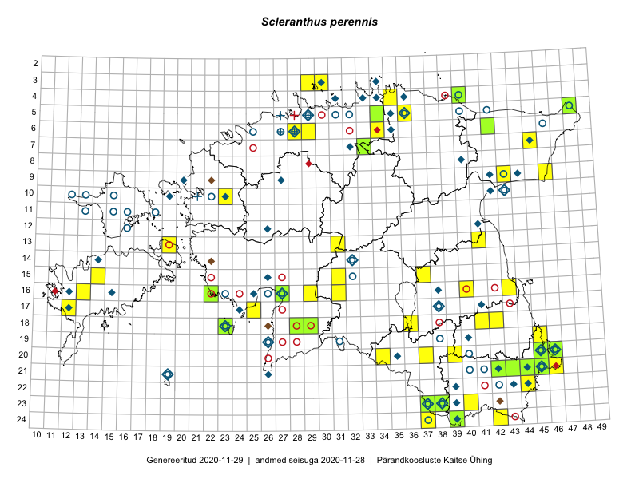

Scleranthus perennis — hall kaderohi
Kaardile koondatud taksonid: Scleranthus perennis L. (91)

Kaart põhineb 91 kirjel, neist:
vaatlusi 65
eksemplare 26
Kaasaegsed1 leiukohad asuvad 53 ruudus.
Andmed “Eesti taimede levikuatlasest”,2 sulgudes ruutude arv:3
● 1971–2005 (65)
○ 1921–1970 (39)
△ kuni 1920 (1)
+ hävinud (0)
? kaheldav (0)
Lisaruudud teistest andmebaasidest:4
ELF: 2006– . . . (0)
PKÜ: 2006– . . . (0)
ELF: 1971–2005 (2)
PKÜ: 1997–2005 (4)
| Ruut | Vaatleja(d) | Vaatlusaeg | Kirje PlutoFis |
|---|---|---|---|
| 21-45 | Toomas Kukk | 2015-06-23 | ruut/ala: Scleranthus perennis L. |
| 21-45 | Toomas Kukk, Kersti Tambets, Sten Mander, Janika Sammasto, Timo Luhamäe | 2014-07-30 | ruut/ala: Scleranthus perennis L. |
| 21-46 | Rein Kalamees, Kersti Püssa | 2015-08-11 | ruut/ala: Scleranthus perennis L. |
| 21-45 | Rein Kalamees, Kersti Püssa | 2015-07-15 | ruut/ala: Scleranthus perennis L. |
| 20-46 | Rein Kalamees, Kersti Püssa | 2015-07-16 | ruut/ala: Scleranthus perennis L. |
| 21-45 | Toomas Kukk, Timo Luhamäe, Kersti Tambets, Sten Mander, Janika Sammasto | 2014-07-30 | ruut/ala: Scleranthus perennis L. |
| 07-33 | Jana-Maria Habicht, Ester Valdvee | 2015-05-29 | ruut/ala: Scleranthus perennis L. |
| 19-45 | Thea Kull, Meeli Mesipuu | 2015-08-19 | ruut/ala: Scleranthus perennis L. |
| 05-48 | Meeli Mesipuu, Timo Luhamäe | 2015-07-23 | ruut/ala: Scleranthus perennis L. |
| 23-38 | Eeva-Maria Jeletsky, Tarmo Niitla | 2015-07-17 | ruut/ala: Scleranthus perennis L. |
| 23-40 | Eeva-Maria Jeletsky, Tarmo Niitla | 2015-08-05 | ruut/ala: Scleranthus perennis L. |
| 17-12 | Mari Reitalu | 2015-06-07 | ruut/ala: Scleranthus perennis L. |
| 13-19 | Meeli Mesipuu, Kadri Tali | 2015-06-24 | ruut/ala: Scleranthus perennis L. |
| 16-13 | Mari Reitalu, Oliver Parrest | 2015-07-27 | ruut/ala: Scleranthus perennis L. |
| 18-28 | Meeli Mesipuu, Timo Luhamäe | 2015-06-09 | ruut/ala: Scleranthus perennis L. |
| 18-36 | Helle Mäemets, Mare Leis | 2015-06-24 | ruut/ala: Scleranthus perennis L. |
| 21-45 | Kersti Püssa, Rein Kalamees | 2015-08-05 | ruut/ala: Scleranthus perennis L. |
| 20-45 | Kersti Püssa, Rein Kalamees | 2015-07-16 | ruut/ala: Scleranthus perennis L. |
| 04-40 | Kaili Orav, Silvia Pihu | 2015-07-21 | ruut/ala: Scleranthus perennis L. |
| 03-30 | Mari Reitalu, Tõnu Ploompuu, Ott Luuk, Peedu Saar | 2014-06-01 | ruut/ala: Scleranthus perennis L. |
| 03-29 | Ott Luuk, Mari Reitalu, Tõnu Ploompuu | 2014-06-01 | ruut/ala: Scleranthus perennis L. |
| 06-28 | Tõnu Ploompuu | 2015-06-06 | ruut/ala: Scleranthus perennis L. |
| 10-23 | Sirje Lagle, Tõnu Ploompuu | 2015-05-15 | ruut/ala: Scleranthus perennis L. |
| 13-41 | Kai Rünk, Ülle Jõgar, Illi Tarmu | 2016-06-10 | ruut/ala: Scleranthus perennis L. |
| 21-45 | Toomas Kukk, Tiit Hallikma, Johannes Kõdar | 2016-06-14 | ruut/ala: Scleranthus perennis L. |
| 24-42 | Rein Kalamees, Eerik Leibak | 2016-06-14 | ruut/ala: Scleranthus perennis L. |
| 23-38 | Rein Kalamees, Eerik Leibak | 2016-06-16 | ruut/ala: Scleranthus perennis L. |
| 20-39 | Rein Kalamees, Eerik Leibak | 2016-06-17 | ruut/ala: Scleranthus perennis L. |
| 20-34 | Silvia Pihu, Illi Tarmu | 2015-07-13 | ruut/ala: Scleranthus perennis L. |
| 18-41 | Vivika Väli, Ülo Väli | 2015-07-31 | ruut/ala: Scleranthus perennis L. |
| 23-37 | Maret Gerz, Liina Oja | 2016-06-15 | ruut/ala: Scleranthus perennis L. |
| 24-37 | Maret Gerz, Liina Oja | 2016-06-15 | ruut/ala: Scleranthus perennis L. |
| 20-37 | Maret Gerz, Liina Oja | 2016-06-16 | ruut/ala: Scleranthus perennis L. |
| 05-36 | Tõnu Ploompuu, Eerik Leibak | 2016-07-27 | ruut/ala: Scleranthus perennis L. |
| 21-46 | Timo Luhamäe, Meeli Mesipuu | 2016-06-14 | ruut/ala: Scleranthus perennis L. |
| 18-23 | Karin Kaljund, Kaire Lanno, Indrek Melts | 2016-07-27 | ruut/ala: Scleranthus perennis L. |
| 09-46 | Meeli Mesipuu, Karin Kikas | 2016-08-31 | ruut/ala: Scleranthus perennis L. |
| 16-27 | Tiit Hallikma, Tõnu Ploompuu | 2016-06-20 | ruut/ala: Scleranthus perennis L. |
| 09-43 | Rein Kalamees, Kersti Püssa | 2016-06-29 | ruut/ala: Scleranthus perennis L. |
| 17-25 | Tiit Hallikma, Tõnu Ploompuu | 2016-07-06 | ruut/ala: Scleranthus perennis L. |
| 06-29 | Kadi-Liis Kesler, Tiina Elvisto | 2015-05-26 | ruut/ala: Scleranthus perennis L. |
| 16-43 | Meeli Mesipuu | 2016-09-02 | ruut/ala: Scleranthus perennis L. |
| 20-45 | Jaak-Albert Metsoja, Mari Metsoja | 2016-06-14 | ruut/ala: Scleranthus perennis L. |
| 22-44 | Jaak-Albert Metsoja, Mari Metsoja | 2016-06-15 | ruut/ala: Scleranthus perennis L. |
| 06-28 | Mari Reitalu, Olev Abner, Ester Valdvee, Tõnu Ploompuu | 2016-06-18 | ruut/ala: Scleranthus perennis L. |
| 20-45 | Meeli Mesipuu | 2017-07-12 | ruut/ala: Scleranthus perennis L. |
| 21-45 | Meeli Mesipuu | 2017-07-12 | ruut/ala: Scleranthus perennis L. |
| 21-44 | Meeli Mesipuu | 2017-07-17 | ruut/ala: Scleranthus perennis L. |
| 21-45 | Toomas Kukk | 2015-06-23 | punkt: Scleranthus perennis L. |
| 16-22 | Indrek Tammekänd, Jaak Tammekänd, Raivo Endrekson | 2015-06-01 | punkt: Scleranthus perennis L. |
| 21-46 | Meeli Mesipuu, Timo Luhamäe | 2016-06-14 | punkt: Scleranthus perennis L. |
| 16-31 | Meeli Mesipuu | 2016-06-23 | punkt: Scleranthus perennis L. |
| 18-28 | Indrek Tammekänd | 2016-07-03 | punkt: Scleranthus perennis L. |
| 21-45 | Meeli Mesipuu | 2017-09-02 | punkt: Scleranthus perennis L. |
| 16-29 | Indrek Tammekänd | 2015-07-31 | ruut/ala: Scleranthus perennis L. |
| 06-34 | Meeli Mesipuu | 2017-07-26 | ruut/ala: Scleranthus perennis L. |
| 07-45 | Meeli Mesipuu | 2017-07-25 | ruut/ala: Scleranthus perennis L. |
| 15-37 | Helle Mäemets | 2015-07-05 | ruut/ala: Scleranthus perennis L. |
| 16-40 | Meeli Mesipuu | 2017-07-22 | ruut/ala: Scleranthus perennis L. |
| 21-45 | Peedu Saar, Toomas Kukk, Ain Piir | 2018-05-16 | punkt: Scleranthus perennis L. |
| 04-35 | Meeli Mesipuu | 2019-08-08 | ruut/ala: Scleranthus perennis L. |
| 18-42 | Thea Kull, Meeli Mesipuu | 2019-07-09 | ruut/ala: Scleranthus perennis L. |
| 21-46 | Ott Luuk, Peedu Saar | 2019-09-24 | punkt: Scleranthus perennis L. |
| 15-31 | Meeli Mesipuu, Timo Luhamäe | 2019-08-28 | ruut/ala: Scleranthus perennis L. |
| 20-46 | Ott Luuk, Tiit Hallikma | 2019-07-10 | ruut/ala: Scleranthus perennis L. |
| 21-45 | J.-M. Habicht | 2009-06-29 | TAM0015826: Scleranthus perennis L. |
| 21-45 | J.-M. Habicht | 2011-06-30 | TAM0030827: Scleranthus perennis L. |
| 04-40 | Kaili Orav, Silvia Pihu | 2015-07-21 | TU373757: Scleranthus perennis L. |
| 07-33 | Jana-Maria Habicht | 2015-05-29 | TAM0116832: Scleranthus perennis L. |
| 05-48 | Jana-Maria Habicht | 2012-08-04 | TAM0121255: Scleranthus perennis L. |
| 18-23 | Kai Vellak | 2016-07-06 | TU309681: Scleranthus perennis L. |
| 23-37 | Maret Gerz, Liina Oja | 2016-06-15 | TAA0133169: Scleranthus perennis L. |
| 21-44 | Peedu Saar, Karin Kikas | 2016-08-18 | TAA0133171: Scleranthus perennis L. |
| 06-42 | Jaak-Albert Metsoja | 2015-07-21 | TAA0140568: Scleranthus perennis L. |
| 18-28 | Meeli Mesipuu, Timo Luhamäe | 2015-06-09 | TAA0140877: Scleranthus perennis L. |
| 16-27 | Indrek Tammekänd | 2017-09-21 | TAA0143778: Scleranthus perennis L. |
| 16-27 | Indrek Tammekänd | 2017-06-20 | TAA0143779: Scleranthus perennis L. |
| 18-29 | Indrek Tammekänd | 2017-07-05 | TAA0143780: Scleranthus perennis L. |
| 18-29 | Indrek Tammekänd | 2017-07-05 | TAA0143781: Scleranthus perennis L. |
| 16-27 | Indrek Tammekänd | 2017-07-16 | TAA0143782: Scleranthus perennis L. |
| 20-45 | Meeli Mesipuu | 2017-07-12 | TAA0145081: Scleranthus perennis L. |
| 21-44 | Jana-Maria Habicht | 2014-07-19 | TAM0136794: Scleranthus perennis L. |
| 05-34 | Ott Luuk, Hannes Pehlak | 2016-07-27 | TAA0145947: Scleranthus perennis L. |
| 04-40 | Ott Luuk, Tiit Hallikma | 2016-07-28 | TAA0145948: Scleranthus perennis L. |
| 21-43 | Ott Luuk, Tiit Hallikma | 2019-07-12 | TAA0150399: Scleranthus perennis L. |
| 20-46 | Ott Luuk, Tiit Hallikma | 2019-07-10 | TAA0150401: Scleranthus perennis L. |
| 24-39 | Thea Kull | 2019-06-29 | TAA0147937: Scleranthus perennis L. |
| 04-40 | Peedu Saar, Ott Luuk | 2019-07-05 | TAA0149590: Scleranthus perennis L. |
| 23-37 | Peedu Saar, Timo Luhamäe | 2019-07-11 | TAA0149596: Scleranthus perennis L. |
| 23-38 | Peedu Saar, Timo Luhamäe | 2019-07-12 | TAA0149604: Scleranthus perennis L. |
| 21-42 | Indrek Tammekänd | 2019-08-16 | TAA0151854: Scleranthus perennis L. |
Kaasaegsed leiukohad (tähistatud värvitud ruutudega) põhinevad peamiselt 2014–2019 välitööandmetel. Väiksemal määral on andmebaasi kantud vanemaid leiuandmeid aastatest 2006–2013.↩︎
Kukk, T., Kull, T., Eesti taimede levikuatlas. Eesti Maaülikool, Põllumajandus- ja Keskkonnainstituut, Tartu, 2005.↩︎
NB! 2005. aasta atlase andmestikus katavad uuemad leiud vanemaid. Näiteks kui liik on ruudus registreeritud 1971–2005, siis pole võimalik öelda, kas ta oli sellest ruudust teada ka enne 1970. aastat. Vana atlase andmetel hävinud ja kaheldavaid leiukohti pole hilisemate (taas)leidude põhjal korrigeeritud.↩︎
Eestimaa Looduse Fondi (ELF) ja Pärandkoosluste Kaitse Ühingu (PKÜ) andmebaasid sisaldavad inventeeritud koosluste kirjeldusi ja liigiloendeid. Neist andmekogudest on kaardile lisatud lisatud vaid need ruudud, millest uue atlase andmekogus taksoni kohta kirjeid veel pole. Kõrvale on jäetud teadaolevalt kaheldavad määrangud. Kaartidel katavad uuema perioodi andmed vanemaid, PKÜ omad ELFi omi. Kattumise tõttu võib kaardil näha olla vähem mingi kategooria ruute kui legendis olev arv näitab. ELFi ja PKÜ andmed ei kajastu hetkel vaatluste tabelis ega ruutude liigiloendites.↩︎